ゲームあつめ
ブラウザで遊べるゲームの一覧です。あそびたい ゲームを えらんでね。
-
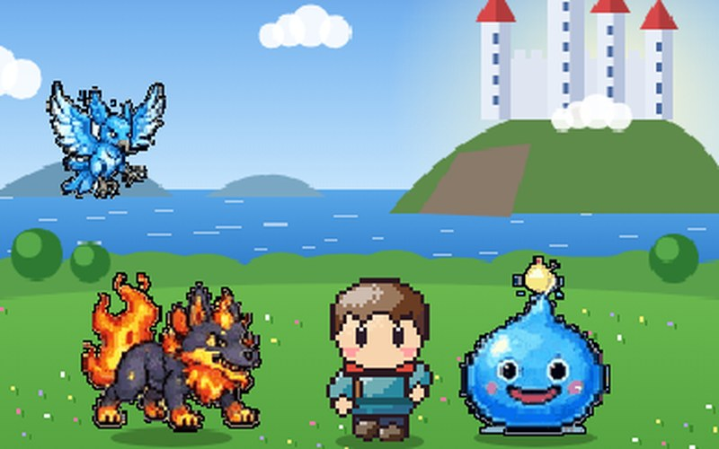
NEWモンスター・エコーズ 〜ルナフィアと ひかりのクリスタル〜ゲームボーイの モンスター配合RPG の あそびごたえを さいげんした ドット絵 RPG。たびのとびらの むこうで にくを なげて モンスターを なかまにし、そだてて レベル10に なったら 配合！ さきに えらぶ おや（けっとう）で うまれる こが かわり、とくべつな くみあわせでは まったく ちがう モンスターも。+が ふえるほど よく そだち、おやの とくぎも うけつげる。ゆがみに とりつかれた ボスと とうぎじょうを かちぬき、ひかりの かけらを あつめよう。20しゅの モンスターが うしろを ついて あるき、ダンジョンは はいるたびに かたちが かわる -
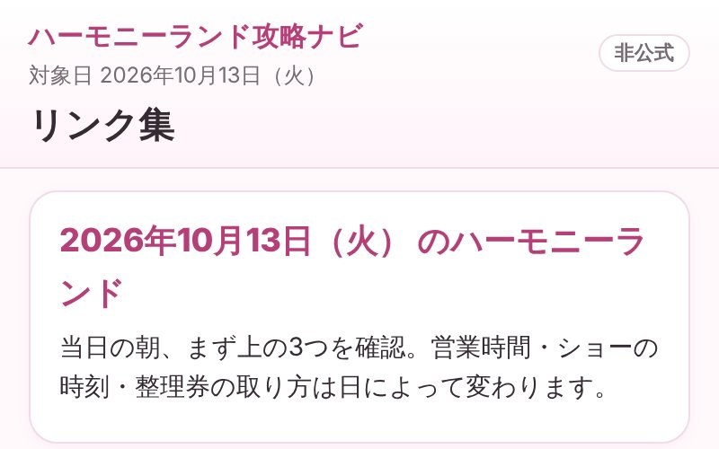
NEWハーモニーランド攻略ナビ（非公式）2026年10月13日（火）に ハーモニーランドへ 行く日のための リンク集。営業時間・ショーの時刻・整理券・マップ・アトラクションの 条件・赤ちゃんの 設備など、見たい 公式ページへ 迷わず 行ける。ショーを 時間順に ならべた 参考の 予定表、施設の 場所が わかる 略図、☆で つくる プラン、子どもの 年齢で 乗れるかの 確認も -
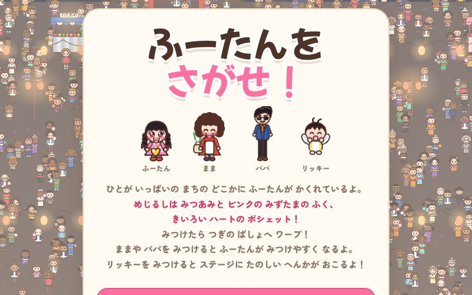
NEWふーたんを さがせ！ひとが いっぱいの いちまいえの どこかに かくれた ふーたん（みつあみ・ピンクの みずたま・きいろい ハートの ポシェット）を さがす ウォーリーふう さがしもの。みつけたら ワープで つぎの ばしょへ！ はるの こうえん・なつの うみ・ゆうえんち・ゆきやま・よるの なつまつり・どうぶつえん・うみの そこ・つきの うちゅうきち・おとぎの おしろ・きょうりゅうの くにの 10か所。せの ひくい ままや せの たかい パパを みつけると ふーたんが みつけやすく なり、リッキーを みつけると ステージが たのしく へんしん（クジラ・UFO・はなび…）。クリアごとに ガチャガチャで きせかえ・かくれキャラ・ひみつステージの カギが あたる -
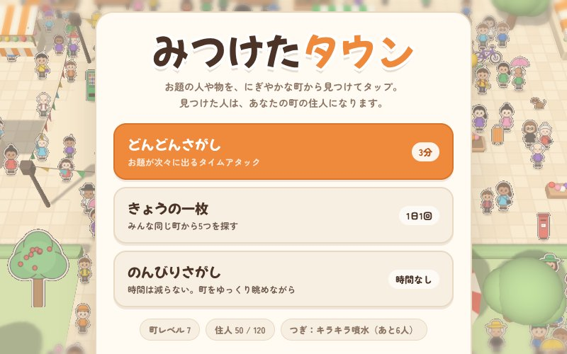
NEWみつけたタウンお題の 人や 物や 動物を、にぎやかな 町の ジオラマから 見つけて タップする さがしものゲーム。3分の「どんどんさがし」、毎日 みんな 同じ町の「きょうの一枚」、時間なしの「のんびりさがし」。似たものを えらぶと「おしい！」で どこが 違うか 教えてくれる。見つけた人は 町の 住人になり、住人が ふえると ふうせん屋さん・花だん・メリーゴーランド…と 町が 育っていく -
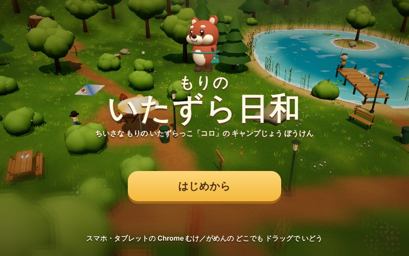
NEWもりのいたずら日和森に すむ ちいさな どうぶつ「コロ」になって、にんげんたちの キャンプじょうを じゆうに たんけんする 3D アドベンチャー。ピクニックの バスケットから ごはんを いただき、みつかったら しげみや テーブルの したに かくれて にげきろう。せんたくものの キャンパーふくで へんそうすれば、ばいてんで かいものも、レンジャーの アルバイトも できる。つり・ボート・たきびの やきマシュマロ・たからさがし・まいごの ぬいぐるみ さがし。ひるから よるへ じかんも ながれる -
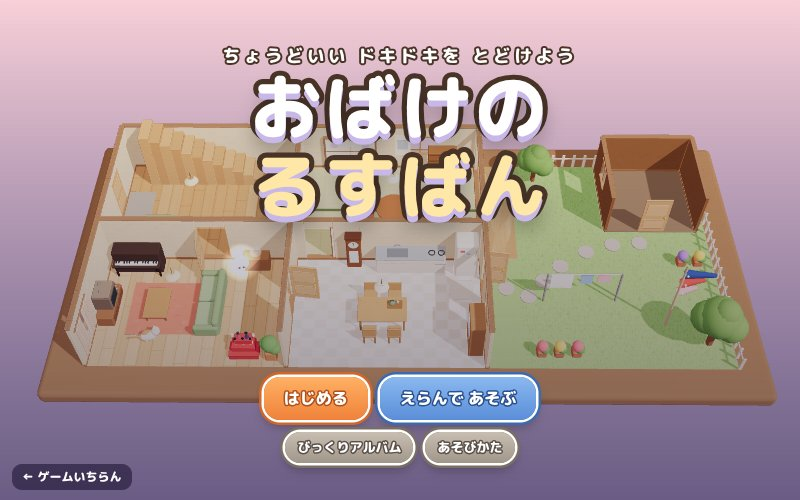
NEWおばけのるすばんちいさな おばけ「ぽわ」の 家に、放課後 子どもたちが あそびに くる。家具や 家電に のりうつって「カタッ」「ガタガタッ！」と おどかそう。こわすぎると 泣いて かえり、たいくつだと ほかの 部屋へ。めざすは「ちょっと こわいけど たのしい！」ちょうどいい ドキドキ。見られると「あやしい…」、3回で おばけさがしが はじまる。はる・なつ・あき・ふゆ、模様替えする 3D ドールハウスで 全16回。 -
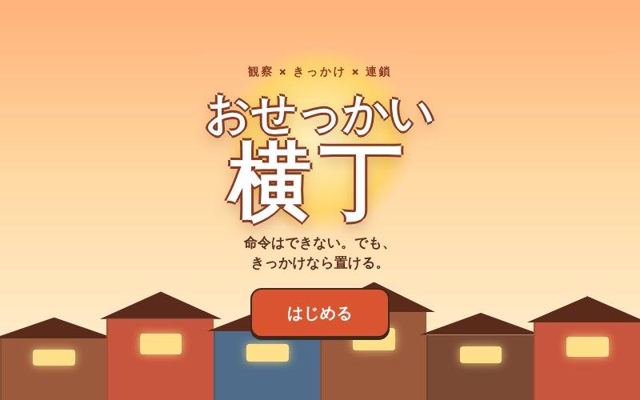
NEWおせっかい横丁命令はできない。でも、きっかけなら置ける。退屈なココ、自信をなくした演奏家ネネ、宣伝が苦手なパン屋のマル。住人を観察して、風船・楽譜・新作パンを「だれに」使うか考えよう。小さなきっかけが連鎖して、広場に「小さな演奏会」が開かれたらクリア。パンの紹介のしかたで結末が変わり、空振りした介入にもそれぞれ反応がある観察型アドベンチャー。 -
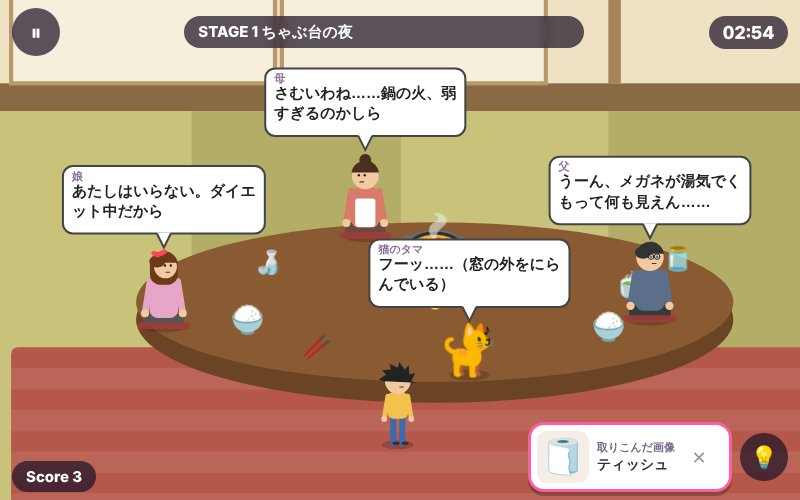
NEWちょっかいスナップ見て、撮って、ちょっかい。勝手に暮らす人たちを観察し、気になる物を「画像」に取りこんで、だれかに送ってみよう。メガネをふいた父、強火にした母、開いた窓から入ってきた虫……ひとつの出来事が次の出来事を呼ぶ。家の食卓・商店街・キャンプ場・動物園・駅・遊園地の6ステージ、全323イベント。排他の分かれ道、時間切れの結末、イベント図鑑とリプレイつき。 -
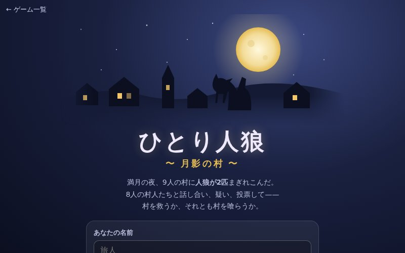
NEWひとり人狼 〜月影の村〜ひとりで遊べる人狼ゲーム。9人の村に人狼が2匹。8人のCPUは性格・感情・人間関係を持ち、占い結果やかばい合いから本気で推理する。疑えば恨まれ、黙れば問い詰められ、嘘の理由は見抜かれる。人狼は仲間をかばったり、護衛成功の朝に口をすべらせたり……表情と仕草から“ボロ”を見抜こう。人狼なら相棒に作戦を指示。終了後は感想戦つき。 -
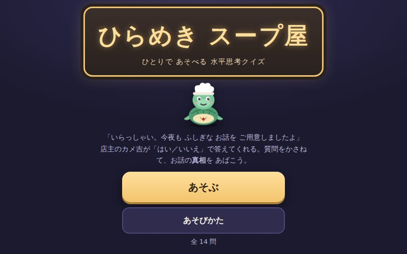
NEWひらめき スープ屋 〜ひとりで あそべる 水平思考クイズ〜店主の カメ吉が 出す ふしぎな お話の「真相」を、はい／いいえで 答えられる 質問を かさねて 推理しよう。質問リストから 選ぶほか、自由に 文章で 聞くことも できる。核心に せまると 手がかりが メモに たまり、新しい 質問が ひらく。真相は 2〜3つの なぞを ぜんぶ 正しく 組み立てて 答え、最後は 伏線回収で すっきり。前菜から 裏メニューまで 全26問・質問 約600 -
 NEWリモコロン 〜ふーたんと リッキーの ちょっかいタウン〜PS2『リモココロン』ふうの ちょっかい アドベンチャー（よこがめん）。かってに うごく まちの ひとびとを みて、きになる ものを「ふたつ えらぶ チョッカイ」で つなぐと、こうどうが かわって つぎの できごとが おきる。れんさを みつけて、ものがたりの「さいごの ちょっかい」まで たどりつこう。ふーたんちの おなべ・しょうてんがい・キャンプじょう・どうぶつえん・えき・ゆうえんちの 6ステージ。それぞれ たくさんの ミニ ストーリーが からみあい、さいごの ちょっかいで なべ ばくはつ・かみなりで ファイヤー・だいだっそう・さらば ちきゅう…!?かくれた チョッカイや こまりごとも いっぱいで、みつけた かずで ランクが きまる
NEWリモコロン 〜ふーたんと リッキーの ちょっかいタウン〜PS2『リモココロン』ふうの ちょっかい アドベンチャー（よこがめん）。かってに うごく まちの ひとびとを みて、きになる ものを「ふたつ えらぶ チョッカイ」で つなぐと、こうどうが かわって つぎの できごとが おきる。れんさを みつけて、ものがたりの「さいごの ちょっかい」まで たどりつこう。ふーたんちの おなべ・しょうてんがい・キャンプじょう・どうぶつえん・えき・ゆうえんちの 6ステージ。それぞれ たくさんの ミニ ストーリーが からみあい、さいごの ちょっかいで なべ ばくはつ・かみなりで ファイヤー・だいだっそう・さらば ちきゅう…!?かくれた チョッカイや こまりごとも いっぱいで、みつけた かずで ランクが きまる -
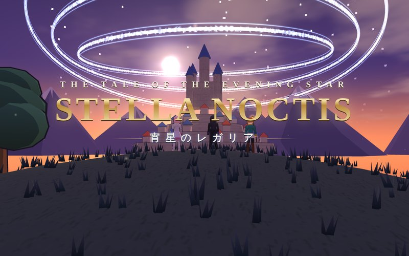
NEWSTELLA NOCTIS ─宵星のレガリア─結界の輪が空に輝く帝都。下町の噴水から盗まれた「星核」を追い、元騎士ジークは城を抜け出した令嬢リュシア、天才術士ノアと旅に出る――。テイルズ オブ ヴェスペリアを彷彿とさせるトゥーン調 3D のアクション RPG。敵とのライン上で戦うリアルタイムバトル（フリーラン・術技連携・オーバーリミット・バーストアーツ）、敵の★を見逃さずに放つフェイタルストライク、カットイン付きの秘奥義、顔ウィンドウで掛け合う「スキット」、隠れたシェフのレシピで料理も。 -
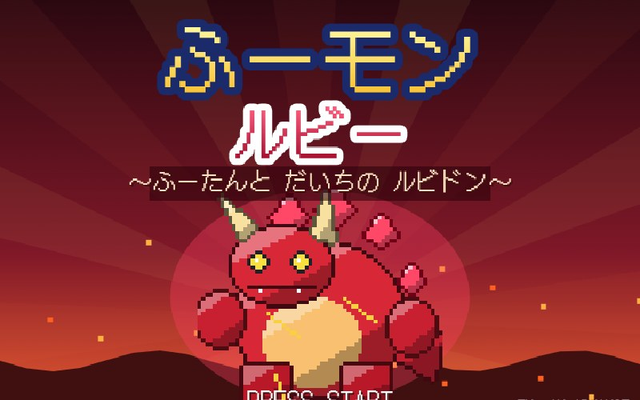
NEWふーモン ルビー 〜ふーたんと だいちの ルビドン〜ひっこしの トラックで あたらしい まちに やってきた ようちえんじ ふーたん。 キノミはかせから もらった パートナーと いっしょに、 くさむらで やせいの ふーモンを つかまえて そだてよう！ 3つの ジムで バッジを あつめ、 だいちを ひろげようと する カザンだんを とめて、 でんせつの ルビドンを しずめろ！ 25しゅるいの ふーモン・ずかん・しんか・ライバル・チャンピオン戦まで、 なつかしい ドットえの ゲームボーイアドバンス ふう RPG -
 NEWふーたんの はちゃめちゃキッチン！オーバークック風の協力クッキングアクション。腹ペコ大怪獣ハラペコンに幼稚園ごと食べられたふーたんとリッキーは、タマネギ園長の「タイム弁当箱」で7日前へ。食材を切り、鍋・フライパン・フライヤーで調理し、皿に盛って次々と注文をさばけ！ 焦げれば火事、皿は洗わないと足りない、チップ倍率は最大×4。離れるトラック、通行人の屋台、揺れる海賊船、ベルトコンベア、いかだ、氷の湖、ワープ床、溶岩の吊り橋、動くカウンターなど全17ステージ＋プロローグ。ひとり（シェフ交代）でも、ふたり（キーボード／ゲームパッド）でも遊べる
NEWふーたんの はちゃめちゃキッチン！オーバークック風の協力クッキングアクション。腹ペコ大怪獣ハラペコンに幼稚園ごと食べられたふーたんとリッキーは、タマネギ園長の「タイム弁当箱」で7日前へ。食材を切り、鍋・フライパン・フライヤーで調理し、皿に盛って次々と注文をさばけ！ 焦げれば火事、皿は洗わないと足りない、チップ倍率は最大×4。離れるトラック、通行人の屋台、揺れる海賊船、ベルトコンベア、いかだ、氷の湖、ワープ床、溶岩の吊り橋、動くカウンターなど全17ステージ＋プロローグ。ひとり（シェフ交代）でも、ふたり（キーボード／ゲームパッド）でも遊べる -
 NEWふーたんと そよかぜの タクトきょうは ふーたんの 5さいの おたんじょうび。 ところが おおきな とり ガルガが おとうとの リッキーを さらって しまった！ しゃべる ふね レオンに のって、 タクトで かぜの むきを かえながら うみの しまじまを ぼうけん。 チュチュたいじ・はっぱの うちわで ふんわり ジャンプ・いわおし パズル・くじらと わっか レース・かいてんぎり！ 3つの しずくを あつめて まものの とりでへ。 トゥーン 3D の アクション アドベンチャー
NEWふーたんと そよかぜの タクトきょうは ふーたんの 5さいの おたんじょうび。 ところが おおきな とり ガルガが おとうとの リッキーを さらって しまった！ しゃべる ふね レオンに のって、 タクトで かぜの むきを かえながら うみの しまじまを ぼうけん。 チュチュたいじ・はっぱの うちわで ふんわり ジャンプ・いわおし パズル・くじらと わっか レース・かいてんぎり！ 3つの しずくを あつめて まものの とりでへ。 トゥーン 3D の アクション アドベンチャー -
 NEWふーたん クエスト 〜ねむれる おひさまと よふかし まおう〜ようちえんじ ふーたんが ゆうしゃに なって ぼうけんする、リアルな 3D の ロールプレイング ゲーム。 よふかし まおうに とじこめられた おひさまを とりもどそう！ まちで ぶきや どうぐを かって、フィールドや どうくつで まものと コマンド バトル。 レベルを あげて じゅもんを おぼえ、おとうとの リッキーや いぬの ポチと なかまに なるよ。 「おまかせ」バトルと よみあげ こえで ちいさな こも あそべる！
NEWふーたん クエスト 〜ねむれる おひさまと よふかし まおう〜ようちえんじ ふーたんが ゆうしゃに なって ぼうけんする、リアルな 3D の ロールプレイング ゲーム。 よふかし まおうに とじこめられた おひさまを とりもどそう！ まちで ぶきや どうぐを かって、フィールドや どうくつで まものと コマンド バトル。 レベルを あげて じゅもんを おぼえ、おとうとの リッキーや いぬの ポチと なかまに なるよ。 「おまかせ」バトルと よみあげ こえで ちいさな こも あそべる！ -
 NEWGRAND CHIBIKKO AUTO（グランド ちびっこ オート）リアルな 3D の まちを ちびっこが ぼうけん！ あるいたり、とまっている くるまや はしっている くるまに のって じゆうに ドライブ。 パトカー・しょうぼうしゃ・アイスクリーム カー・ようちえん バスなど 7つの ミッション、ジャンプ パークで スーパー ジャンプ、かくれ ほし あつめ、ラジオも きけるよ。 いたずらすると おまわりさんが おいかけて くる！
NEWGRAND CHIBIKKO AUTO（グランド ちびっこ オート）リアルな 3D の まちを ちびっこが ぼうけん！ あるいたり、とまっている くるまや はしっている くるまに のって じゆうに ドライブ。 パトカー・しょうぼうしゃ・アイスクリーム カー・ようちえん バスなど 7つの ミッション、ジャンプ パークで スーパー ジャンプ、かくれ ほし あつめ、ラジオも きけるよ。 いたずらすると おまわりさんが おいかけて くる！ -
 NEWSKY GLIDERリアルな 3D の けいこくを グライダーで とぶ アクション。 30この リングを くぐって ゴールの みずうみを めざそう。 じょうしょう きりゅうで たかく のぼり、ブーストで かっとぶ！ あさ・ひる・ゆうがたの 3つの じかんと、ぶつからない「かんたん」モードで だれでも あそべるよ
NEWSKY GLIDERリアルな 3D の けいこくを グライダーで とぶ アクション。 30この リングを くぐって ゴールの みずうみを めざそう。 じょうしょう きりゅうで たかく のぼり、ブーストで かっとぶ！ あさ・ひる・ゆうがたの 3つの じかんと、ぶつからない「かんたん」モードで だれでも あそべるよ -
 NEWふーたんと リッキーの こえあそびランドじぶんの こえで あそぼう！ ろくおんした こえを ロボット・おばけ・かいじゅう・やまびこ など 15しゅるいに へんしん。 「だれが・どこで・なにを・どうした」を ろくおんして まぜまぜ すると へんてこ ぶんしょうに！ アカペラ カラオケでは こえだけで うたって てんすう＆かさねどりで ひとりがっしょう！ こえで ドレミの ピアノ、 こえで リズムの ビート、 さかさま ことば チャレンジ、 ちいさな こえで とばす ロケットも
NEWふーたんと リッキーの こえあそびランドじぶんの こえで あそぼう！ ろくおんした こえを ロボット・おばけ・かいじゅう・やまびこ など 15しゅるいに へんしん。 「だれが・どこで・なにを・どうした」を ろくおんして まぜまぜ すると へんてこ ぶんしょうに！ アカペラ カラオケでは こえだけで うたって てんすう＆かさねどりで ひとりがっしょう！ こえで ドレミの ピアノ、 こえで リズムの ビート、 さかさま ことば チャレンジ、 ちいさな こえで とばす ロケットも -
 NEWキュアたんてい ふーちゃんたんていの ふーちゃんと リッキーが 16の じけんを かいけつ！ だい2ぶ（8わ）は おばけの モヤモヤンが とうじょう。 まちがいさがしや カードあわせも！ むしめがねで てがかり さがし、おいしゃさんで しんさつ、えいごや すうじの なぞとき、へんしんして モンスターと バトル！
NEWキュアたんてい ふーちゃんたんていの ふーちゃんと リッキーが 16の じけんを かいけつ！ だい2ぶ（8わ）は おばけの モヤモヤンが とうじょう。 まちがいさがしや カードあわせも！ むしめがねで てがかり さがし、おいしゃさんで しんさつ、えいごや すうじの なぞとき、へんしんして モンスターと バトル！ -
 NEWふーちゃんと リッキーの キラキラびょういんふーちゃん せんせいと リッキーの びょういん！ しんさつ・レントゲン・きゅうきゅうしゃ・あかちゃんルーム・ぬいぐるみびょういん・めがねやさん・ドクターヘリ など 14の おへやを、 5かいだての びょういんを あるいて まわろう。 あそぶたびに かんじゃさんや びょうきが かわるよ。 ごほうびの おようふくで ふたりを おきがえ！ かんじゃさん ずかん・キラキラ かんじゃさん・まいにちの おねがいスタンプ・メダルで びょういんの そとが どんどん にぎやかに！ となりの しかいいんでは かばさんの はいしゃさん・けんしん・レントゲン・むしばちりょう・そめだし・フッそ・しせきとり・はえかわり・はの かたち・きょうせい・かぶせもの の 11しゅるいの はいしゃさんごっこ！ からだの ふしぎや えいご、 かずも まなべる
NEWふーちゃんと リッキーの キラキラびょういんふーちゃん せんせいと リッキーの びょういん！ しんさつ・レントゲン・きゅうきゅうしゃ・あかちゃんルーム・ぬいぐるみびょういん・めがねやさん・ドクターヘリ など 14の おへやを、 5かいだての びょういんを あるいて まわろう。 あそぶたびに かんじゃさんや びょうきが かわるよ。 ごほうびの おようふくで ふたりを おきがえ！ かんじゃさん ずかん・キラキラ かんじゃさん・まいにちの おねがいスタンプ・メダルで びょういんの そとが どんどん にぎやかに！ となりの しかいいんでは かばさんの はいしゃさん・けんしん・レントゲン・むしばちりょう・そめだし・フッそ・しせきとり・はえかわり・はの かたち・きょうせい・かぶせもの の 11しゅるいの はいしゃさんごっこ！ からだの ふしぎや えいご、 かずも まなべる -
 キュアふーたん ストライクひっぱって はなすと びゅーん！ キュアふーたんと あかちゃん リッキーが はねかえって てきを やっつける。ひっさつわざで ドーン！ クリアで レベルアップ＆なかまが ふえるよ
キュアふーたん ストライクひっぱって はなすと びゅーん！ キュアふーたんと あかちゃん リッキーが はねかえって てきを やっつける。ひっさつわざで ドーン！ クリアで レベルアップ＆なかまが ふえるよ -
 ふーたんと リッキー すくすく にっきおねえちゃんの ふーたんが あかちゃん リッキーを おせわ！ ミルク・おふろ・あそびで ほいくえん → がっこう → けっこん → あかちゃんへ。ふくや ずかん あつめも
ふーたんと リッキー すくすく にっきおねえちゃんの ふーたんが あかちゃん リッキーを おせわ！ ミルク・おふろ・あそびで ほいくえん → がっこう → けっこん → あかちゃんへ。ふくや ずかん あつめも -
 キュアふーたんの キラキラカートキュアふーたんと リッキーが 3Dの カートで レース！ アイテムを なげたり、スターで むてきに なったり。4つの コースを はしろう
キュアふーたんの キラキラカートキュアふーたんと リッキーが 3Dの カートで レース！ アイテムを なげたり、スターで むてきに なったり。4つの コースを はしろう -
 ふーたんと リッキーの ブロックパズルブロックを おいて たて・よこ 1れつ そろえると きえるよ。コンボで キュアふーたんに へんしん！
ふーたんと リッキーの ブロックパズルブロックを おいて たて・よこ 1れつ そろえると きえるよ。コンボで キュアふーたんに へんしん！ -
 ふーたんの こっそりミッションかべや くさむらに かくれながら、みつからないように ゴールを めざす ステルスゲーム
ふーたんの こっそりミッションかべや くさむらに かくれながら、みつからないように ゴールを めざす ステルスゲーム -
 キュアふーたん サバイバーわらわら でてくる てきを やっつけて、レベルアップで わざを えらんで どんどん つよくなる！
キュアふーたん サバイバーわらわら でてくる てきを やっつけて、レベルアップで わざを えらんで どんどん つよくなる！ -
 ふーちゃんのまち3Dの しまを おさんぽして、56の アトラクションで あそぼう。あたらしい ゲームセンターには もぐらたたき・ピンボール・メダルおとし など 10しゅるいの アーケードゲーム！ もじの れんしゅうや おうちづくりも！
ふーちゃんのまち3Dの しまを おさんぽして、56の アトラクションで あそぼう。あたらしい ゲームセンターには もぐらたたき・ピンボール・メダルおとし など 10しゅるいの アーケードゲーム！ もじの れんしゅうや おうちづくりも！ -
 こっそりトレジャー見つからずに宝物を集めて、億万長者をめざそう！
こっそりトレジャー見つからずに宝物を集めて、億万長者をめざそう！